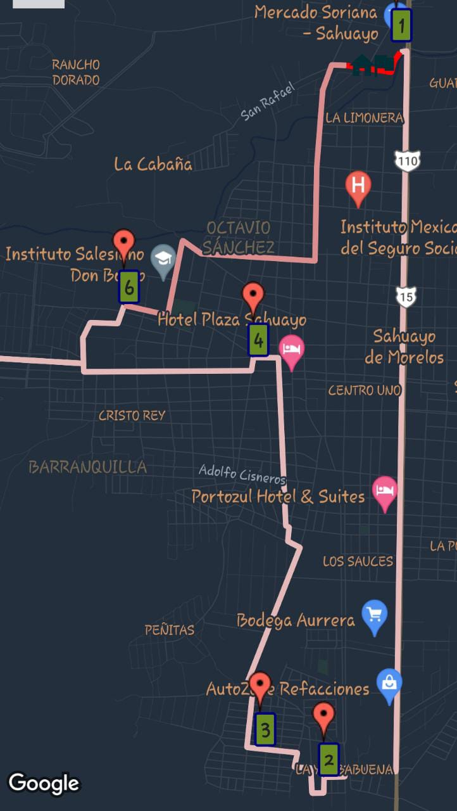

GETRAPCIS
CONSULTAR
Combis
Autobuses
Quejas y sugerencias
(current)
Cerrar sesión
RUTA GRIS CON AMARILLO (Combi)

COLOR:
GRIS - AMARILLA
CAPACIDAD:
15 personas
INICIO DE RUTA:
CETis 121, Crucero-Soriana
FIN DE RUTA:
Yerbabuena
COSTO DE PASAJE:
$10.00
DURACIÓN TOTAL APROX. DE LA RUTA:
40 minutos, (una unidad pasa aprox cada 10 minutos)
KMS RECORRIDOS POR EL TOTAL DE LA RUTA:
21 km
SITIOS DESTACADOS QUE RECORRE:
SORIANA, AURRERA, INFONAVIT, CRISTO REY, SANTUARIO, UNID, COLINAS DEL TEPEYAC